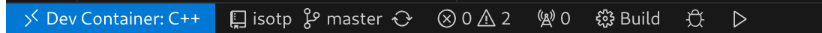

Developing using VSCode
This guide helps to setup the toolchain on Windows, Mac and Linux using vscode.
Install VS Code
👉 Download & install VS Code for Windows, macOS, or Linux.
Install Docker
👉 Download & install Docker for Windows, macOS, or Linux.
Necessary Extensions
In VS Code, open the Extensions panel (Ctrl+Shift+X) and install:
- Dev Containers — for the Docker-based build environment.
- CMake Tools — for configuring and building.
- C/C++ Extension Pack — for IntelliSense and debugging.
Open in Container
- Clone this repository:
git clone https://github.com/RobotPatient-Research/SensorHub.git
- Open the project folder in VS Code.
- When prompted, click “Reopen in Container”, or run
Dev Containers: Reopen in Containerfrom the Command Palette (Ctrl+Shift+P).
Configure CMake Tools

* Make sure you are in the devcontainer environment and click on the build cogwheel in the bottom bar. * The first time you build, CMake Tools will prompt you to select a kit:- First, click “Scan for Kits” to detect available compilers. The menu will disappear...
- Hit build button again, then, select
arm-none-eabi-gccfrom the list.
Build
-
Use the CMake Tools status bar at the bottom to:
-
Configure
- Build
How to select the other SensorHub build target?
CMake needs to be instructed to build with the other board_conf.h file. By adding this to your .vscode/settings.json (if it doesn't exist, create it (don't forget to put snippet in brackets {...})).
"cmake.configureArgs": [
"-DBUILD_SENSORHUB_HEAD=ON ",
"-DBUILD_SENSORHUB_1=OFF"
]